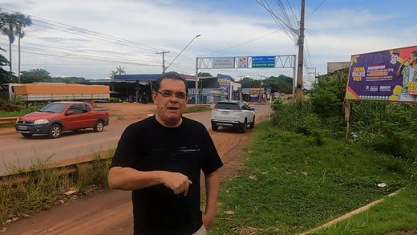

00:00:14.920
Apresentador anuncia a viagem à margem da rodovia, com carros e a sinalização da PA-370 ao fundo.
Santarém (PA), acesso à rodovia PA-370 · confirmado
A abertura apresenta o percurso de Santarém a Uruará e diz que a equipe vai percorrê-lo com o asfaltamento concluído.
Transcrição · 00:00:01 | 00:00:09 | 00:00:17 | 00:00:26
Turismo Aqui — quadro de vídeo publicado no YouTube